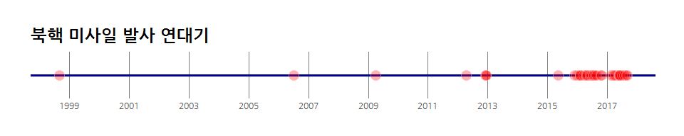
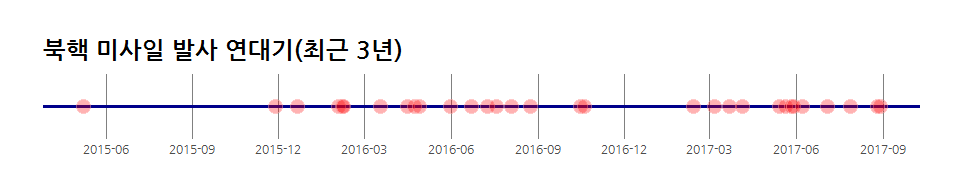
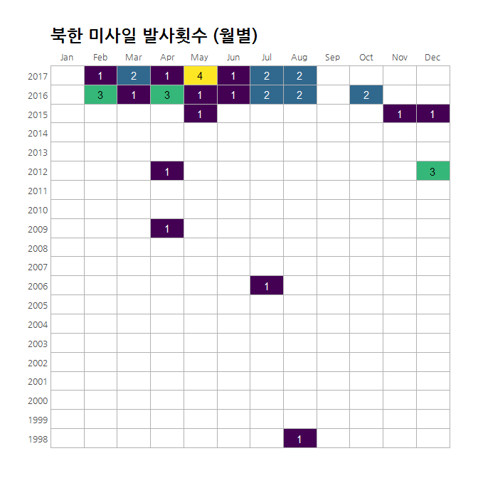

xwMOOC 데이터 과학
xwMOOC
r Sys.Date()
북한 미사일 발사 연대기
북한이 미사일을 경술국치일에 맞춰 일본상공으로 쏘아올렸다. 이와 관련하여 1990년대부터 북한이 쏘아올린 미사일 관련된 데이터분석을 시작해 보자.
Chronology of North Korea’s missile, rocket launches Rpubs에 올라온 분석을 기본으로 하여 최근 데이터를 반영하고 한글을 그래픽에 반영하였다. 1
2. 북한 미사일 발사 일지 시각화
2.1. 데이터 가져오기
아마도 조만간 연합뉴스에서 기사를 갱신할 것으로 보이는데 현재 시점으로 2017년 8월 발사한 두발의 발사체에 대한 내용은 반영되어 있지 않아 Chronology of North Korea missile, rocket launches 기사를 기반으로 하고 그래픽 - 북한 미사일 발사 일지 내용을 수작업을 입력하여 데이터를 정제한다.
# 0. 환경설정 ----------------------------------
# library(stringr)
# library(rvest)
# library(ggthemes)
# library(lubridate)
# library(ggrepel)
# library(hrbrthemes)
# library(tidyverse)
# library(extrafont)
# loadfonts()
# 1. 데이터 가져오기 ----------------------------------
yp_news_url <- "http://english.yonhapnews.co.kr/northkorea/2017/07/29/0401000000AEN20170729000700315.html"
yp_news_list <- read_html(yp_news_url) %>%
html_nodes(xpath = '//*[@id="content"]/div[2]/div[2]') %>%
html_text() %>%
str_split(., pattern = "-- ") %>%
.[[1]]
yp_news_list <- yp_news_list[-c(1,2)]
# 2. 데이터 정제 ----------------------------------
yp_news_df <- tibble(yp_news_list) %>%
rename(news = yp_news_list) %>%
mutate(news_list = str_split(news, ":")) %>%
mutate(odate = map(news_list, 1)) %>%
unnest(odate) %>%
select(odate, news)
yp_news_df <- yp_news_df %>% mutate(odate = str_replace(odate, "Aug.", "August"),
odate = str_replace(odate, "Dec.", "December"),
odate = str_replace(odate, "Nov.", "November"),
odate = str_replace(odate, "Feb.", "February"),
odate = str_replace(odate, "Oct.", "October"))
write_csv(yp_news_df, "data/yp_news_df.csv")
yp_news_df <- read_csv("data/yp_news_df.csv",
col_types = cols(
odate = col_date("%B %d, %Y"),
news = col_character()
))
yp_news_df <- yp_news_df %>%
add_row(odate="2017-08-29", news="평양시 순안 일대 탄도미사일 1발 발사") %>%
add_row(odate="2017-08-26", news="강원도 깃대령 일대에서 단거리 발사체 3발 발사")
wrap_20 <- scales::wrap_format(20)
yp_news_df %>% mutate(event = wrap_20(news)) %>%
select(일자 = odate, 도발=event) %>%
arrange(desc(일자)) %>%
DT::datatable()3. 북한 미사일 발사 시각화
3.1. 북한이 미사일 도발을 시작한 전체 기간
ggplot으로 전체적인 방향을 잡고나서, fig.height=2, fig.width=10 설정을 통해 출력 시각화 산출물을 최종정리한다.
# 3. 데이터 시각화 ----------------------------------
## 3.1. 전체 기간
#+ fig.height=2, fig.width=10
ggplot(yp_news_df, aes(odate, 1)) +
geom_hline(yintercept = 1, size=1.3, color="darkblue") +
geom_point(shape=21, fill="red", color="white", size=5, alpha=0.3) +
scale_x_date(date_labels = "%Y", date_breaks = "2 years") +
scale_y_continuous(expand=c(0,0)) +
labs(x=NULL, y=NULL,
title="북핵 미사일 발사 연대기") +
theme_ipsum_rc(grid="X", base_family = "NanumGothic") +
theme(axis.text.y = element_blank())
3.2. 북한이 미사일 도발을 최근 3년(2015년부터)
데이터를 최근 3년으로 한정시킨다. 그리고 위와 마찬가지로 ggplot으로 전체적인 방향을 잡고나서, fig.height=2, fig.width=10 설정을 통해 출력 시각화 산출물을 최종정리한다.
## 3.2. 최근 3년
#+ fig.height=2, fig.width=10
yp_news_df %>% filter(odate >= "2015-01-01") %>%
ggplot(., aes(odate, 1)) +
geom_hline(yintercept = 1, size=1.3, color="darkblue") +
geom_point(shape=21, fill="red", color="white", size=5, alpha=0.3) +
scale_x_date(date_labels = "%Y-%m", date_breaks = "3 months") +
scale_y_continuous(expand=c(0,0)) +
labs(x=NULL, y=NULL,
title="북핵 미사일 발사 연대기(최근 3년)") +
theme_ipsum_rc(grid="X", base_family = "NanumGothic") +
theme(axis.text.y = element_blank())
3.3. 북한이 미사일 도발 달력 형태 시각화
ggplot의 유연성을 살펴볼 수 있는 시각화 산출물이다. 달력형태 시각화 산출물을 위해 데이터를 사전 준비한다. 그리고 나서 이를 ggplot에 넣어 시작화하는데 fig.height=7, fig.width=7 설정을 통해 출력 시각화 산출물을 깔끔히 마무리 한다.
## 3.3. 시점별로 살펴보기
#+ fig.height=7, fig.width=7
yp_news_df %>%
mutate(
month = lubridate::month(odate, TRUE, TRUE),
year = lubridate::year(odate)
) %>%
count(year, month) %>%
ungroup() %>%
complete(year=1998:2017, month) %>%
mutate(year = as.character(year), lab_col = ifelse(n<3, "white", "black")) %>%
ggplot(aes(month, year)) +
geom_tile(aes(fill=n), color="#b2b2b2", size=0.1) +
geom_text(aes(label=n, color=lab_col)) +
scale_x_discrete(expand=c(0,0), position="top") +
scale_color_identity() +
viridis::scale_fill_viridis(na.value="white") +
labs(x=NULL, y=NULL,
title="북한 미사일 발사횟수 (월별)") +
theme_ipsum_rc(grid="", base_family = "NanumGothic") +
theme(legend.position="none")